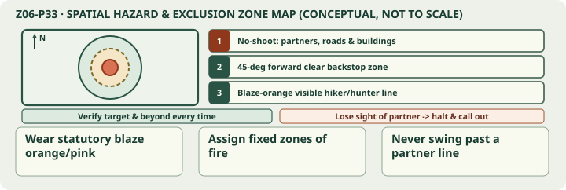

Z06-P33 · Hunting and fishing · New manuscript
Blaze Visibility and Safe Zone-of-Fire Boundaries
Prevent hunting-party and bystander shootings through statutory blaze-color visibility and disciplined zones of fire.
When it applies · All firearms hunting seasons and multi-use public lands during autumn.
Equipment · Statutory Minnesota blaze orange or blaze pink hat and outer torso garment.

Actions
- Wear required Minnesota blaze orange or blaze pink outer clothing visible from all sides during firearms deer and applicable seasons—and encourage non-hunting hikers on open public lands to wear bright blaze visibility too.[H02, H03]
- Agree on explicit forward zones of fire before walking in a group, maintain visual/voice spacing, and never swing a muzzle across a companion line.[H03]
- Verify exact statutory setback distances from occupied buildings, livestock, roads, and public trails before entering hunting cover.[H02, H03]
Failure recognition · Wearing camouflage during firearms deer season or swinging on fast-flushing game across a partner line causes preventable shootings.[H02, H03]
Verify · Blaze garments are worn visibly on head and torso, group spacing is clear, and no-shoot building/road sectors are mapped.[H02, H03]
Stop or change course · Stop movement and unload immediately if a group member loses sight of partners or bystanders/hikers enter the sector.[H03]
Evidence and editorial notes
- H02 · Minnesota DNR · Minnesota Hunting and Trapping Regulations (Current web edition)
- Section: Hunting licenses, zones, seasons, and legal methods · Conditions: Minnesota big game, small game, and bird hunting
Support: Hunters must verify current license, permit-area, season, legal-hours, blaze-clothing, and method rules with the governing authority prior to afield activity.
Limitations: Private-land trespass law, municipal ordinances, and tribal jurisdiction apply separately; emergencies do not suspend wildlife law. · Conflicting evidence: None noted.
Editorial note: Establishes Z06 hunting authority gate. · Specialist reviewer: Minnesota DNR wildlife law reviewer
Primary source · checked 2026-11-25 - H03 · Minnesota DNR · Firearms Safety Certification and Hunter Education (Current web edition)
- Section: Four fundamental firearm safety rules and certification · Conditions: Any firearm handling, transport, or field carry
Support: Treat every firearm as loaded, keep the muzzle in a safe direction, keep finger off the trigger until ready to shoot, and verify target and what is beyond it.
Limitations: Certification is required by age/statute in Minnesota; written summaries never substitute for formal certified safety instruction. · Conflicting evidence: None noted.
Editorial note: Mandatory Z06 bounded weapon-safety gate. · Specialist reviewer: Certified hunter-education and firearm safety instructor
Primary source · checked 2026-11-25
Source lineage · New manuscript (Z06 P17 equipment safety) · Classification · New manuscript.